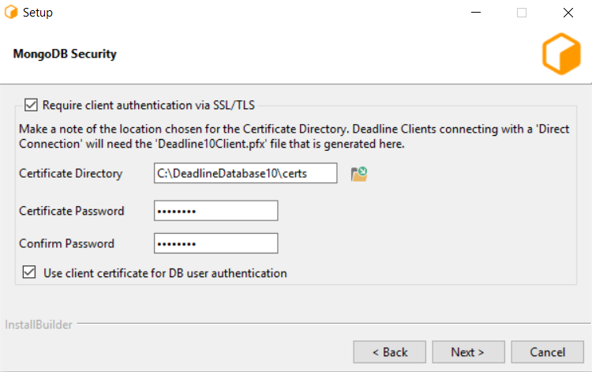
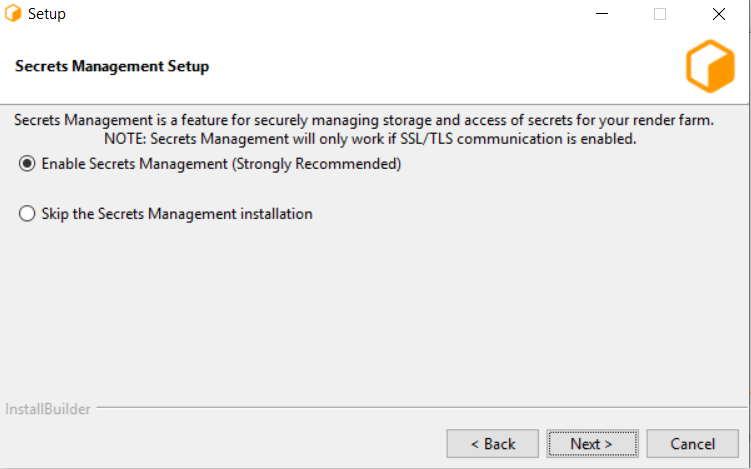
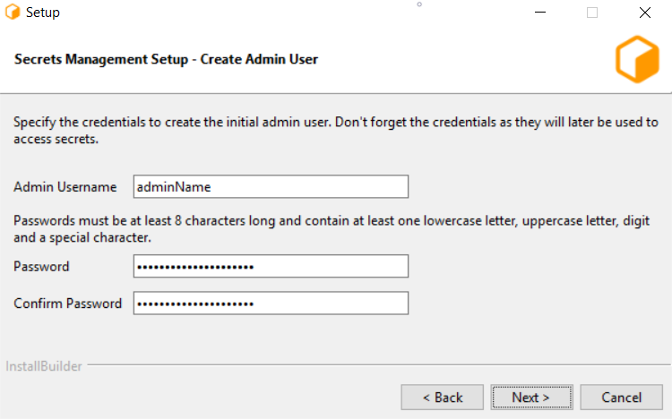
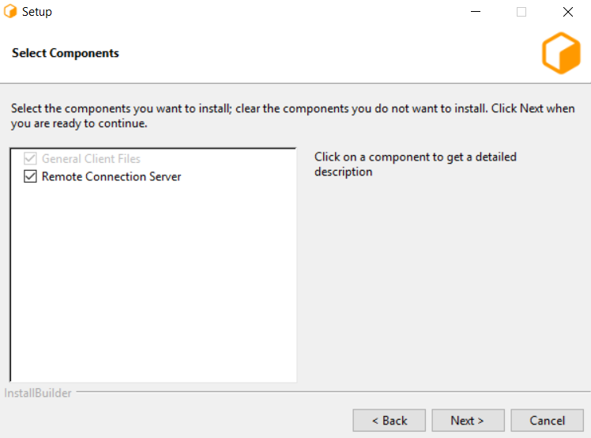
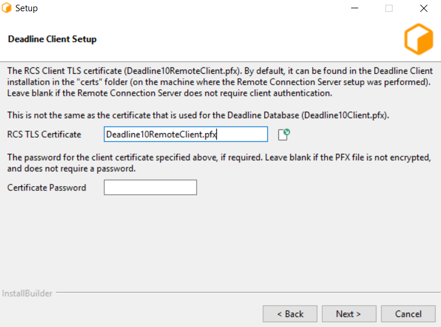
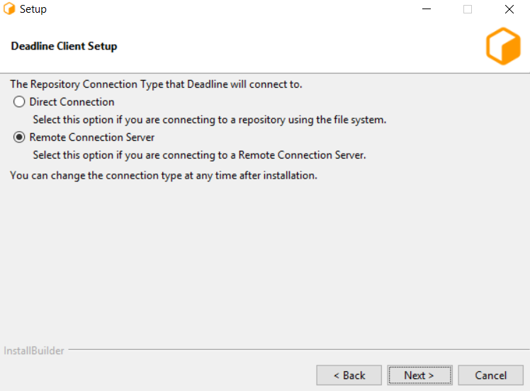
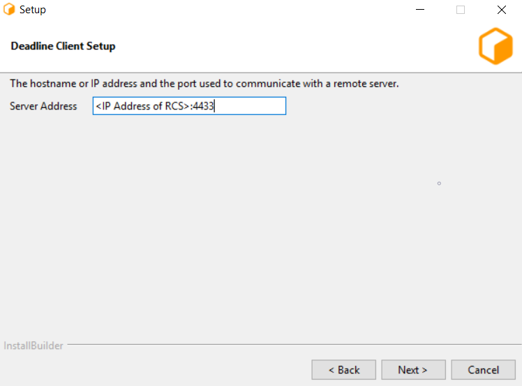
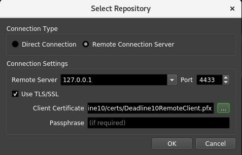
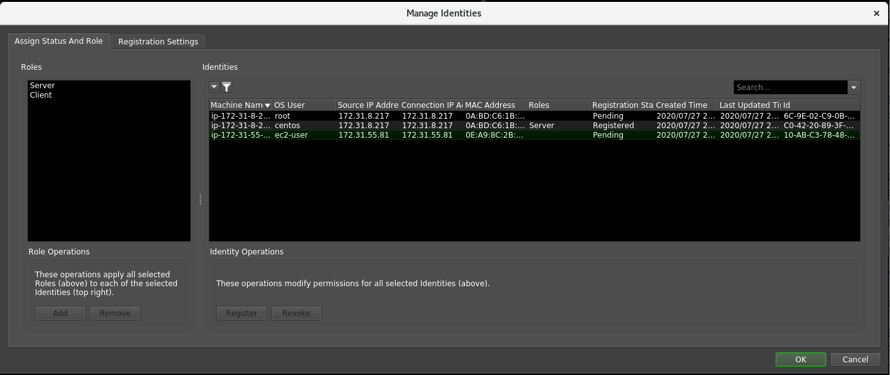
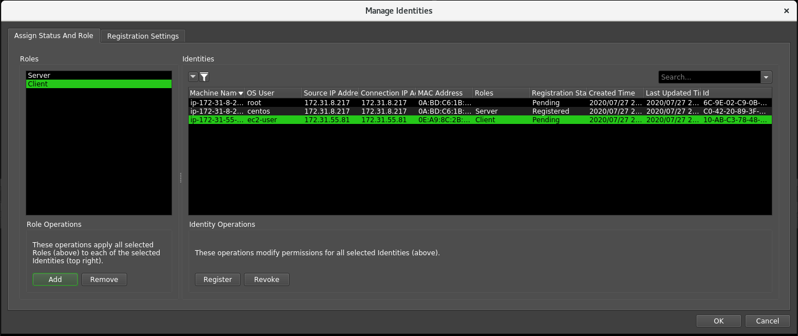

Getting Started With Deadline Secrets Management¶
Overview¶
On this page we will learn how to setup Secrets Management and its common use cases. This page is designed to be a quick start guide.
Additional information and use cases can be found here.
1. Installing the Repository¶
The first step is to run the Repository Installer. It will be assumed that the reader is familiar with the Repository Installer documentation for specifying other, non Secrets Management related settings.
For Secrets Management use, you can run the Repository Installer for a fresh install of the Database and Repository, or for updating your existing installation. In the Repository Installer, to use Secrets Management:
- Select the recommended option to enable SSL/TLS communication with the Database.
- 
- Select the recommended option to Enable the Deadline Secrets Management feature.
- 
- Create an initial Administrator User. adminName will be used later for running Secrets Management related DeadlineCommands and logging in.
- 
2. Installing a Remote Connection Server¶
The second step is installing a Remote Connection Server. This needs to be installed on the machines that will be selected to run the Remote Connection Server (RCS).
It will be assumed that the reader is familiar with the Client Installer documentation and RCS for specifying other, non Secrets Management related settings. In the Client Installer, to use Secrets Management:
- Choose the “Remote Connection Server” option to install the RCS.
- 
- Enable TLS. Port 4433 chosen here will be used later on in this start guide.

- Select the recommended option to generate SSL/TLS certificates for communicating with the Remote Connection Server.

- Create Deadline10RemoteClient.pfx which will later be used by the client machines to securely connect to the RCS.
- 
- Select “Assign server role and grant master key access.” (Windows and Linux)

- (Linux only) Enter the name of the OS user who will be running the Remote Connection Server. On Windows, the user who is running the installer will be used.

- (Windows and Linux) Enter the credentials of the initial Administrator User that you created in step 1, leave the master key field untouched (default value should be “defaultKey”), and click Next.

(macOS only) After the installation is complete, run ConfigureServerMachine with the appropriate arguments from the terminal.
You can also install your Remote Connection Server using unattended mode by running the Deadline Client installer with the following arguments: --mode unattended, --enable-components proxyconfig, --secretsAdminName <admin user name>,
--secretsAdminPassword <admin password>, and --masterKey defaultKey, where <admin username> and <admin password> are the credentials specified in step 1.
Example:
DeadlineClient-10.1.10.0-windows-installer.exe --mode unattended --enable-components proxyconfig --secretsAdminName admin --secretsAdminPassword V3ry5tr0ngP@55w0rd!!! --masterKeyName defaultKey
After installation is complete, start up your Remote Connection Server. If running deadlinercs on commandline produces
DataController threw a configuration exception during initialization: Error encountered when loading the configured Client Certificate (/opt/Thinkbox/DeadlineDatabase10/certs/Deadline10Client.pfx). It is likely either an invalid x.509 certificate, or the wrong passphrase was provided.
then make sure the user running deadlinercs has access to Deadline10Client.pfx and Deadline10RemoteClient.pfx for remote connection. In this instance, this error was encountered on a Linux machine.
3. Installing Clients¶
Follow the Client Installer documentation to install the Deadline Client applications on all machines you wish to connect to your server.
Make sure to choose the Remote Connection option to connect to your running RCS
Use IP address of RCS machine and port number set in “2. Installing a Remote Connection Server” (in our case 4433). Make sure your firewall settings permit such connections to occur.
Use SSL/TLS client certificate generated in “2. Installing a Remote Connection Server” (Deadline10RemoteClient.pfx).
Once installation is complete, start any Deadline Client application (such as Deadline Worker) so that the machine registers itself as an Identity with the RCS.
4. Granting Client Roles to Client Machines¶
- Open the Monitor application, making sure to be connected to the RCS over Remote Connection. To connect via Remote Connection in Deadline Monitor, navigate to File > Launch Monitor for Repository… which will produce a pop up. If running Deadline Monitor on same machine as RCS, then fill out as follows:
- 
The port number 4433 was set in “2. Installing a Remote Connection Server”.2. Deadline10RemoteClient.pfx was created in “2. Installing a Remote Connection Server”.
- Once the new Deadline Monitor loads, select Tools > Power User Mode and then Tools > Manage Identities… option, and enter your Administrator credentials when prompted.

Verify the Identity IDs of all of the registered clients. Note that the Identity ID (rightmost column below) is tied to the public key of the OS User running the Client application.
In this case, the second machine has the role “Server” as it was assigned this in “2. Installing a Remote Connection Server”. The newly connected machine is the third and has “Pending” Status.
Select all of the valid clients on the right side of the Manage Identities window and the “Client” role on the left. Click “Add” and you will see on the right side, the “Roles” column update to have “Client” for all selected machines.
In addition, with the selected machines on the right hand side, press the “Register” button (you will see the “Registration” column updated). Finally, press “OK” button located at the bottom right of the Manage Identities window to confirm your changes.
You now have registered client machines which can successfully render jobs that require secrets. If you want to be able to automatically grant certain roles to more machines, please follow the Identity Registration Settings documentation.
5. Conclusion¶
You are now able to save secrets such as passwords/license keys that your Database will securely store and Deadline applications use.
To save example secrets, Remote Connect to your RCS as shown in first step of “5. Granting Client Roles to Client Machines” and then navigate to Tools > Power User Mode followed by Tools > Configure Repository Options… > Usage Based Licensing and save values for URL and Activitation Code. You can confirm your secrets were saved by running ListAllSecrets Administrator Command:
$ ./deadlinecommand.exe secrets ListAllSecrets adminName
Please enter your Admin password:
Secret Id Secret Version MasterKey Id MasterKey Version Secret Description Secret Disabled
=========================================== ============== ============ ================= ================== ===============
/admin/ublsettings/UsageBasedActivationCode 0 defaultKey 0 False
/admin/ublsettings/UsageBasedURL 0 defaultKey 0 False
Your client machines can securely access these secrets with you in control of this access through Manage Identities. To learn more about how to effectively use Secrets Management and keep your information secure please read Deadline Secrets Management for more information.